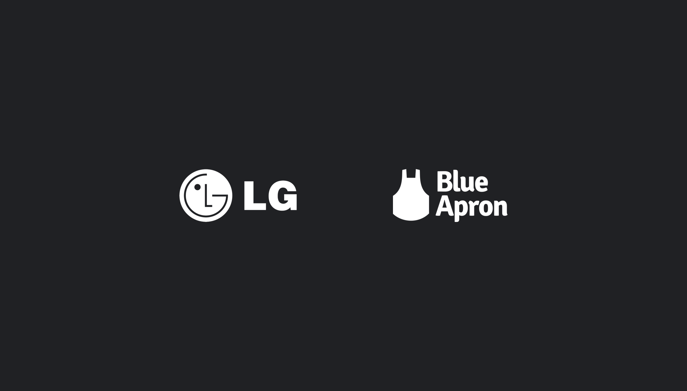
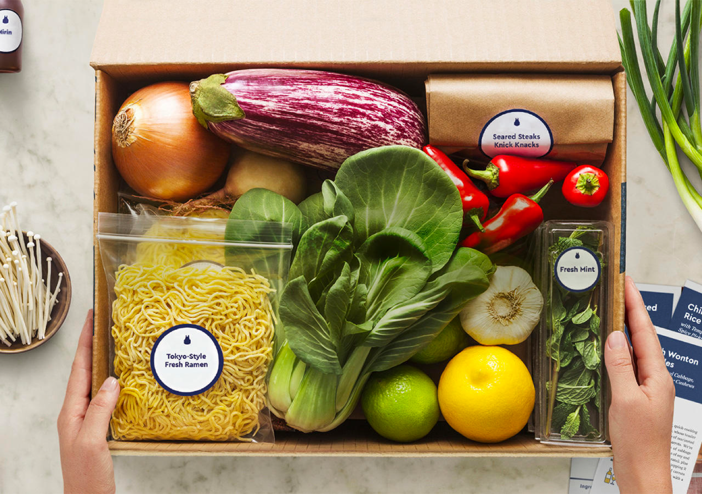

5+ years of data strategy
in 1 case study
Table of contents
Context
If there’s one thing I’m grateful for about the agency environment, it’s that it has pushed me to learn fast and understand how to work in all kinds of environments with all kinds of people. I started out as a pure data strategist out of school and through my projects learned to mix in qualitative methods to develop deeper insights.
What I want to do here is share two quick case studies on some projects I’ve done for LG and Blue Apron, and then highlight a couple learnings I’ve had along the way. For NDA purposes I’m not able to share the final deliverables here.

LG Mobile and Blue Apron
Developing New Product Features For LG Mobile
Problem
In 2016, LG had launched a new phone, the LG V20, and had noticed sales/reception towards the device were very low. The LG mobile department was still young and hadn’t formed a research-driven process to product development, instead relying on its engineering as a differentiating factor between its competitors.
With the LG V20, they had put a lot of engineering towards its camera hardware, and then built in a ton of manual camera modes to show off its capabilities. They had also leveraged the majority of their marketing messaging around these manual camera modes. I was brought in post-launch to understand why they were not connecting with customers.

The LG V20's many manual camera options
Methodology
The two main questions we set out to answer were:
✣
What do people want out of a new phone?
✣
What sways their purchasing decision?
We took a more attitudinal approach to our research because the things that people use on a day-to-day basis aren’t necessarily the things that grab their attention from a marketing perspective to make a purchase decision.
We used a mixed-methods approach to our research. We started with a lit review to better understand the mobile camera space for ourselves since we came in as an agency. We then used quantitative methods including surveys and social listening to get an understanding of the overall climate and stack-rank the types of features people wanted in a phone. We then used a focus group to probe deeper into questions that could provide more of a longer nuanced response.
Impact
We discovered that manual camera modes were the last thing people wanted. Instead they preferred simple switches and filters from a camera. While it was great that LG had built up amazing camera hardware, we suggested they create more simple ways to use it and an easier to understand marketing message around them. You see Google adopting this strategy in its current line of phones (ie. rather than being explicit about machine learning increasing detail in a dark photo, they simply call it “night sight”).
Beyond that we recommended that they use some of the needs we found were most important in their target market and build features that could attract those customers. This helped them understand how to allocate engineering headcount< towards their next release. We were also able to communicate to them the importance of research in early stages of their product development, as opposed to leaving it as an afterthought post-launch which convinced them to rescope us to lead research for early product development in their next launch.
Research Into Subscription Retention For Blue Apron
Problem
Blue Apron was one of the very first meal-kit services to enter the US market but had found that they were not gaining new customers at an adequate rate, and were even having trouble retaining its existing customers. I was brought in to understand the competitive landscape, identify core issues with Blue Apron’s product/positioning, and suggest changes they could make.

A typical Blue Apron meal kit
Methodology
This was a heavily quantitative-focused project because scale of data was important in making decisions in this space. We used a mixture of: social listening, audience segmentation, competitive analysis, brand-passion indexing, and Google Trends analysis to paint a complete picture.
This was a unique case in which research was relatively siloed from the client themselves. This meant that I had to be scrappy with data points like using Google Trends data as a way to map out “intent to purchase” in light of proper sales data.
Impact
This research helped them understand that their product wasn’t aligning with a compelling enough consumer “need state.” Our brand-passion indexing was really instrumental in helping them see the significance of our research because Blue Apron is a direct-to-consumer product in a space where people need to be feel strongly about the brand in order to make a purchase. In order to get consumers to do this, you need to have carved out a compelling niche, but Blue Apron was too generic compared to its competitors which focussed on things like ease of use or health.
Learnings
Research can not afford to be insular
Selling the value of research involves being proactive every step of the way. Research is not meant to be a deck full of numbers, it needs to be a process that excites the people on your team.
This hasn’t been something that’s always worked out and I think especially earlier in your career you rely a lot more on the leadership of the research department to do this for you. But one thing I’ve learned is that in the business world you can’t just wait around and hope things will happen, you need to step up and make them happen.
Effective research requires multiple iteration cycles
One thing I missed in my work was the ability to see through research over multiple iterations of a product. Whether it was client scope, layoffs at the agency or even resource shifting within our company, there was only ever a couple rounds of iteration< you would be present for. This also makes it harder to build lasting relationships with the people implementing the work that should be driven by your insights and this has really pushed me to want to shift over to a product company to try that out.
I’m not a pure data person
Data strategy as a field is headed towards the direction of data science and is slowly losing that human touch. A big part of steering your career is taking moments to reflect, and I’ve come to realize that I need moments of human connection and empathy to feel alive by the research I’m doing. Luckily as my career progressed I started to evolve towards a more mixed-methods approach and am now even starting to bring in human-centered design methods into my practice. As I move forward I want to evolve from a data strategist to becoming a mixed-methods UX researcher.